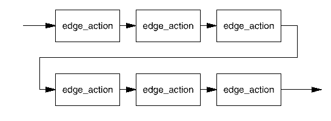

Edge action setups
6-edge setups
Whenever defining edge actions, six must be specified - one for each edge in the sequence edge 1, edge 2, edge 3, edge 4, edge 5, and edge 6. If no action is required at a given edge, use N or . (period).

14-edge setups
Whenever defining edge actions, fourteen must be specified - one for each edge in the sequence d1, d2, d3, d4, d5, d 6, d7, d8, r1, r2, r3, r4, r5, and r6. If no action is required at a given edge, use N or . (period)